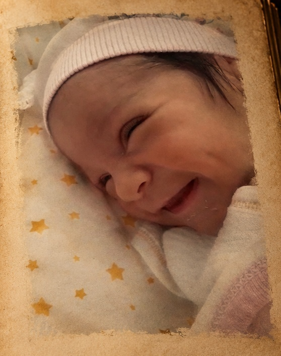

KIZIM’a..
Şiir..kızım..alınyazım..yürek sızım..kalp hırsızım..
Bu satırları belki bir gün yüzümüzde bir tebessümle beraber okuyacağız.. belki de , gözlerinden akmamaya inat eden bir damla gözyaşı ile ama yine de gülümseyerek tek başına okuyacaksın.
Yani , güzel kızım , güldüğünde yanaklarında beliren ve görmeyi en çok sevdiğim gamzelerini yine göreceğim... nerede olduğumun hiç bir önemi yok.

Bilmeni isterim ki;
Ben bu şiirleri birilerine bir şey anlatmak için değil, içimde kopan fırtınaları , bir yağmur misali kağıda dökmek için yazdım. Ve bazılarını yıllar sonra sen bul diye sakladım. Çünkü ben buldum.
Sana bırakabileceğim hatıralar arasından biri de , bu şiirlerim. Ve eğer özlersen ve duymak istersen diye bu şiirleri senin için kendi sesimle okudum. Ben çok isterdim..
Bir gün bu sayfalarda kendinden bir parça bulursan, bil ki , o şiir senden önce yazılmış olsa bile, sana aittir.
Çünkü sen benim , yani bu kocaman gövdenin altındaki çelimsiz çocuğun , beklediği yaşama sebebisin.
Çünkü sen benim , yazdığım en güzel şiirsin…
Beni hep gülen gözlerle ve sana deliler gibi aşık bir kalple hatırla…
Hasretle gamzelerinden ve o küçük çenenden öperim.
Baban.

GELİYORUM
Yoksam düşlerinde, gecelerinde kayıpsam..
Bakışların hep donuk, gözlerin ıslanıyorsa..
Soğuksa ellerin, buz gibiyse hala..
Ve inatçıysan çağrında..sabırsız
Geliyorum!
Gecelerin koynunda bir esireysen
Yanaklarımdan akan yaşlar kadar sessiz
Yağmurlu gecelerde…
Bir ceylan yavrusu gibi ürkek ve ıslaksan
Geliyorum!
Denizin koyu maviliğinde kayboluyorsan..
Her kanat çırpışında martıların,
Yüreğine çaresiz sancılar saplanıyorsa
Geliyorum!
Bir rüzgar kırmışsa dalını..
Dudaklarını kurutmuşsa serin bir meltem..
Sıyrılamamışsan gecenin sisli ve bulanık karanlığından
Ve şefkatli eller bekliyorsan yaşamak için..
Bekle…!
Geliyorum!
AĞLAYAMAZSIN
Seni de terk edip gider bir gün.
En çok sevdiklerin, inandıkların.
Bir yağmur yağar düşlerine hasretinden
ve bir bulut çöker anılarına katran gibi. Ağlayamazsın…
Saçlarına rüzgar bir başka eser artık.
Zaman bir balyoz gibi iner gözlerine.
Gelir misin ? deme sakın.
Boğazında düğümlenir çaresizliğin. Ağlayamazsın.
Daha ne kadar yaşatacaksın ki bu aşkı kalbinde?
Seni tüketen de zaten bu aşk değil mi?
Anlıyorum.. sen hayatı yanlış anlamışsın.
Gülüyorsun ağlayacak yerde ağlayamıyorsun, değil mi?
ACI
Nereden bilirdim senin avucumdaki hayat çizgim olduğunu…
ve hayat çizgimin bu kadar kısa..
BİR ÇİÇEK SEVDİM
Bir çiçek sevdim , kimsesizliğimin kıraç topraklarında adı bende narindi
şiir tadında mürekkep okyanusunda adı bende elemdi
Bir çiçek sevdim , beyaz kanatlarıyla papatya fallarında adı bende sevgiydi
ömrümün baharında içimdeki çiğ tanesiydi adı bende lale'ydi
Bir çiçek sevdim uçurum boylarında rüzgarlarla kardeşti adı bende iklimdi
gece karanlığında sedef teni binbir renkti adı bende hasretti
Bir çiçek sevdim annemin kokusunda alnımın yazısında adı bende ateşti
tanrının huzurunda kalbimin ortasında
unuttum..adı bende neydi?